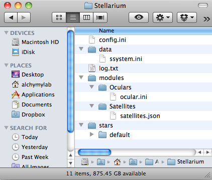
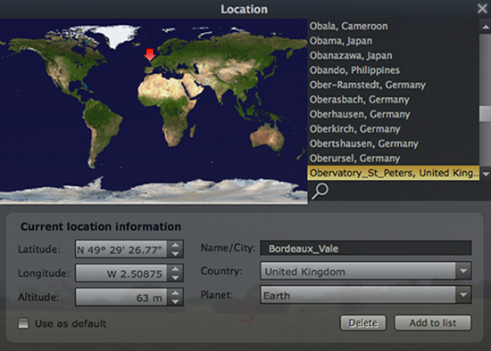

2. Startup
Stellarium can be started by double clicking the Application in the Applications folder, Dock or dedicated apps alias folder.
The main application comes as a package file which effectively hides the contents inside a folder with its own directory structure. The first time the Stellarium application is run it creates a folder in the OS X user library, this has its own directory structure and a folder is created under each user who runs Stellarium on the machine.
This User Data Directory is used to store the configuration file for that user, scripts and data, all of which override configuration and data in the main application folder. The main application contents thus act as a default for new users and a backup should anything go wrong with a users configuration.
If a file exists in the User Data Directory, it will be used in
preference to a file with the same name existing in the Installation Data
Directory. This allows users to customise data files, textures and so on
without modifying the originally installed files.
Details of the startup will be written to the log.txt file in the User Directory
which can be checked if any problem occurs in startup.
More exact details of the main application and its 'bundle' structure and the user directory are detailed in the sections that follow.
On first using Stellarium the first thing you need to do is set the location you will be working from in terms of latitude, longitude, date and time and any different langauge settings. Stellarium will then work out the view of the sky from this point in whatever direction you choose to look in. In daytime hours it will show positions of the Sun and planets, although only the Sun should be visible of course. If you wait until nightfall or fast forward the time frame then you get the night sky objects in view.
Time and date will default from the machine, although this can be amended from the left icon bar and in the User Data
config.ini file.
Location can be set from the left icon bar (or function key F6) and a number of new latitude /
longitude locations stored, e.g. home, local observatory and the default set in
user config.ini file.
Some options may only be configured by editing the configuration file
config.ini , which is created in the user directory the first time Stellarium is
run for that user, others are updated in this file by Stellarium update screens, the original
default_config.ini file being left untouched in the Stellarium Application
'bundle'.
Typical User data folder layout, in this case the user_location.txt file now
exists so some user defined locations have been set up.

The config.ini file in the user folder is created from the default_config.ini file which exists in the application package contents. The initial location is set as Paris to start with, the exact location then being looked up in the locations detail file.
The section of the config.ini file storing location details is shown below:
[init_location]
landscape_name = guereins
location = Paris, France
Function key F6 brings up the location selection window where existing locations can be accepted and set as the default, or new locations can be created and added to the selection list, although they are stored in
the file user_locations.txt .
Latitude and Longitude can be entered as decimal numbers and Stellarium will convert to display as Deg, Min and Secs, or they can be entered as Deg, Min and Secs.
The values for location longitude and latitude are expected in some applications
to be positive for North and East, negative for South and West, however
Stellarium only needs the N, S, E, W value. The value for the altitude is in meters.
Type in new name, country and co-ordinates and Click on "Add to list" to create record in
user_locations.txt (see previous observatory example in list), in addition click "Use as default" to update "[init_location]" in
config.ini. This location will be used when Stellarium restarts.

Having just set up our observatory location, here a new location has is being
set up for Bordeaux in Guernsey, Latitude has been type in in decimals and
converts to Deg, Min, Secs when the cursor is moved to the Longitude field.
Once Longitude and Altitude are entered we can click on "Use as default" if
required and then click "Add to List". Note
there may be an issue with closing the window by clicking on 'X' - this is due
to bug in the 'QT' application used in construction of Stellarium.